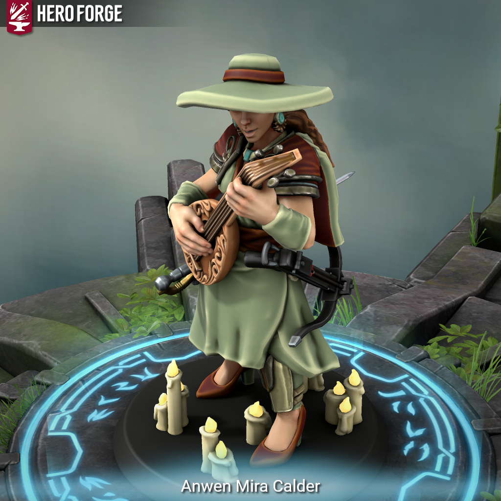

# Meet Anwen or fudgeSeven marriages to seven partners under seven names. But Anwen was the first.
Born in a small, slow-moving river town, Anwen learned early that names, appearances, and personalities are all tools. She was charismatic, socially dominant, and remarkably adaptable, able to read a room and tilt herself just enough to become precisely what a situation required. She left her town not because she was running, but because she needed to grow. A visiting bardic college noticed her instinctive social acumen and subtle influence, and offered her a chance to learn formally. At the same time, she felt the pull of the wider world: to see cities, rivers, mountains, and people she could only imagine. The decision to leave was both opportunity and instinct; a first act of self-definition.
Before she considered multiple lives, Anwen had already begun traveling under assumed names. Some names protected her from unwanted attention in foreign cities; others allowed her to move unnoticed in courts or taverns where curiosity could be dangerous. A different identity was a shield, a key, and a way to observe without being fixed to one story.
Her first first-love was a border warden, Lord Albrecht Halvorn. She met him when he arrived in town to inspect the river defenses. At a public festival, a heated argument broke out among the townspeople over trade duties. Anwen, using her wits and careful phrasing, mediated the dispute without raising her voice or taking credit. Albrecht noticed not just her ability to calm tempers, but the subtle authority in her presence. Over the following weeks, he sought her counsel for local matters, gradually drawn to her combination of intelligence, humor, and steadiness. She valued his moral compass and the way he made decisions rooted in principle, even when it was hard or unpopular, a grounding certainty in a world that otherwise demanded performance at every turn.
Her other first-love was Magistrate Lucien D’Arquet, an arbiter with a fierce devotion to fairness. Though Albrecht and Lucien moved in similar political circles, they knew her under different names: Albrecht as “Elira Fen,” the traveling student who assisted local councils, and Lucien as “Seraphine D’Arquet,” a young legal apprentice visiting the city. Neither suspected that she had another identity elsewhere. Each alias had been carefully chosen to suit its environment; functional, believable, and protective.
Over the years, she met Thaddeus, Mistress Selara, Lady Calanthia, Pellan, and Spymaster Danton Vale. Thaddeus held wonder and curiosity in every gesture; Selara offered quiet steadiness, a calm anchor in a chaotic world; Calanthia carried a peculiar loneliness that invited trust; Pellan memorized the world with unerring care; and Danton watched everything, perceptive enough to unsettle even her. One by one, she courted and wed them, each under a different name, each relationship sincere and fully lived.
She was careful. She had studied names, faces, and social patterns for decades, but she had never accounted for the Lady of Mirrors, an Archfey who spotted her unusual multiplicity. Pellan, unaware of his own ties to the Lady of Mirrors, inadvertently revealed Anwen’s many selves to her fey gaze. The attention was subtle at first, then insistent: refinement of her talents, illusions without fatigue, names that could protect or reveal.
The realization that she was being watched, combined with the impossibility of sustaining seven lives perfectly under mortal limitations, made her step away. She left her homes and her spouses to seek something singular: a chance to exist as Anwen, in her own right, even if only temporarily.
We find her now adventuring with a group that knows her true name. She is observant, calm, and socially precise, able to manipulate situations with soft words and subtle cues. She loves her husbands deeply – each for what they bring to her life – but here, she is free to be one person: Anwen Mira Calder.
[!info] Anwen Mira Calder / Half-Elf Bard (Eloquence) 4 / Archfey Warlock 3 - Primary stats: Charisma > Dexterity > Constitution
- Key spells: Disguise Self, Suggestion, Calm Emotions, Hypnotic Pattern, Faerie Fire
- Combat role: battlefield control, social manipulation, indirect engagement
- Weapons: rapier for precision melee, light crossbow for distance